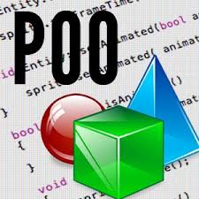

PROGRAMACION ORIENTADO A OBJETOS
La programación orientada a objetos
(POO, u OOP según sus siglas en inglés)
es un paradigma de programación que viene
a innovar la forma de obtener resultados.
Los objetos manipulan los datos de entrada
para la obtención de datos de salida específicos
donde cada objeto ofrece una funcionalidad especial.
